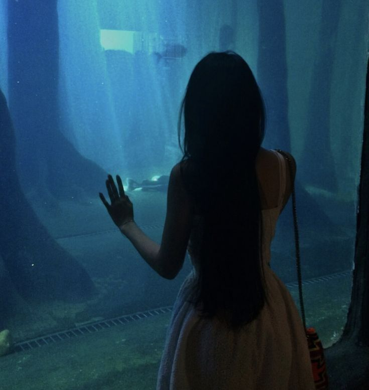

Database
In today's digital world data is more valuable than ever before.
18-5-23
Read MoreHello, my name is Hanae and I am currently a student at H. Pius X-instituut. I am pursuing studies in accounting and computer science, and I am dedicated to expanding my knowledge and skillset in these fields. In addition to my academic pursuits, I have many interests and hobbies. Reading is one of my passions, as it allows me to explore new worlds and expand my imagination. Recently, I have also taken an interest in Pilates, as well as other activities such as crochet, chess, and baking. This year has been a bit of a challenge for me, as I made the difficult decision to change my degree program in the middle of the year. In the first semester, I studied economics and math, but I discovered that math was not my forte and I struggled with it. However, I remained positive and believed that everything happens for a reason. As a result, I changed my degree program during the second semester and I'am now focusing on my studies and elevating myself.
